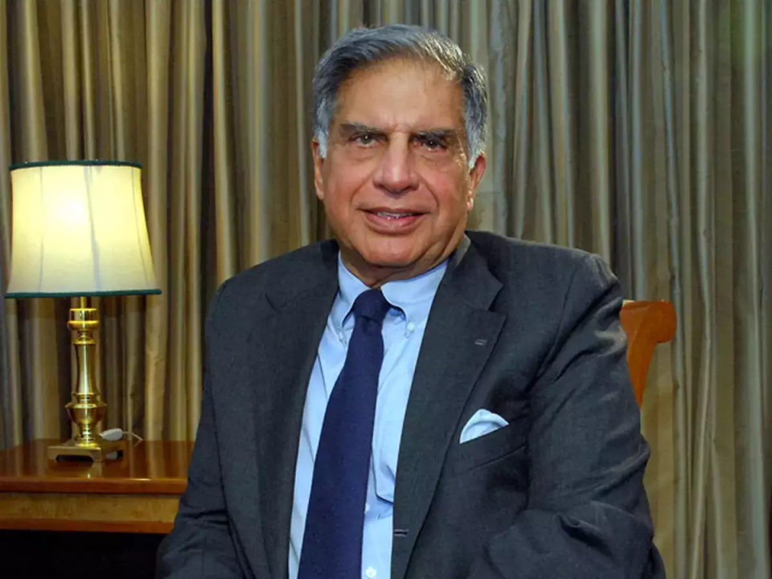

1937-Present
"I don't believe in taking right decisions. I take decisions and then make them right"
Ratan Naval Tata (born 28 December 1937) is an Indian industrialist, philanthropist and former chairman of Tata Sons. He was a chairman of the Tata Group from 1990 to 2012, and interim chairman from October 2016 through February 2017. He continues to head its charitable trusts.In 2008, he received the Padma Vibhushan, the second highest civilian honour in India, after receiving the Padma Bhushan, the third highest civilian honour in 2000.
He is the son of Naval Tata, who was adopted by Ratanji Tata, son of Jamsetji Tata, the founder of the Tata Group. He graduated from the Cornell University College of Architecture with a bachelor's degree in architecture.He joined Tata in 1961, where he worked on the shop floor of Tata Steel. He later succeeded J. R. D. Tata as chairman of Tata Sons upon the latter's retirement in 1991.
Under his tenure the Tata Group acquired Tetley, Jaguar Land Rover, and Corus, in an attempt to turn Tata from a largely India-centric group into a global business. Tata is also one of the largest philanthropists in the world, having donated around 60–65% of his income to charity. Ratan Tata is also a prolific investor and has made numerous investments in several startups. Tata has invested in over 30 start-ups to date, most in a personal capacity and some via his investment company.
Ratan Tata was born in Bombay, now Mumbai, during the British Raj, into a Parsi Zoroastrian family, on 28 December 1937.He is the son of Naval Tata, who was born in Surat and later adopted into the Tata familyTata studied at the Campion School, Mumbai till the 8th class. After which, he studied at the Cathedral and John Connon School in Mumbai, the Bishop Cotton School in Shimla, and the Riverdale Country School in New York City, which he graduated from in 1955.
After graduating from high school, Tata enrolled in Cornell University, from which he graduated with a bachelor's degree in architecture in 1959. In 2008, Tata gifted Cornell $50 Million, becoming the largest international donor in the university's history.
Turnaround of Tata Group: Ratan Tata is credited with transforming the Tata Group into a streamlined and globally competitive conglomerate. He focused on divesting non-core businesses, revitalizing existing ones, and expanding into new sectors.
Ethical Leadership: Known for his ethical leadership style, Ratan Tata emphasized corporate governance, transparency, and integrity within the Tata Group, setting high standards for business conduct in India.